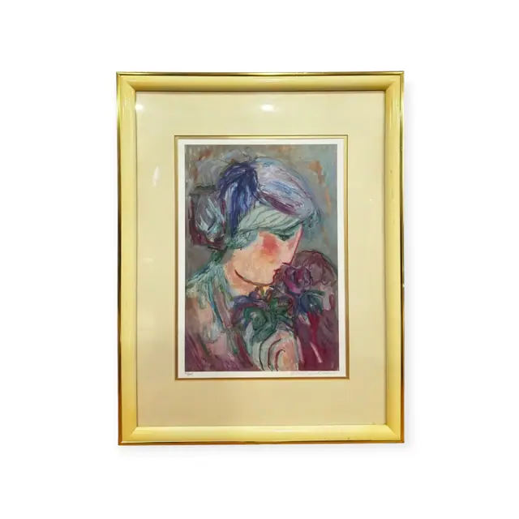
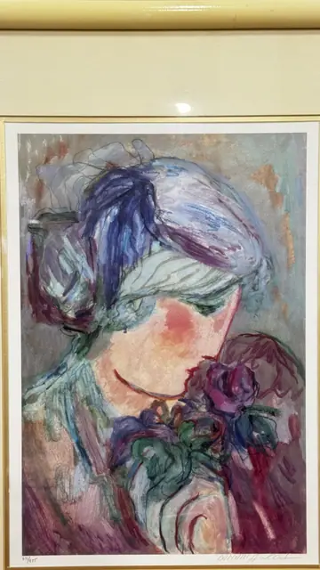
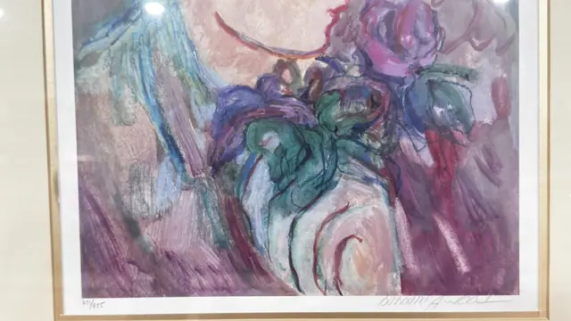
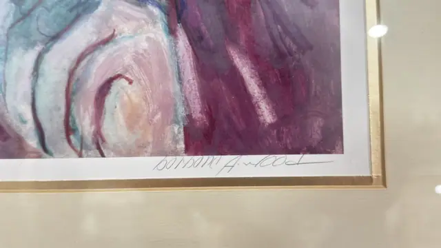
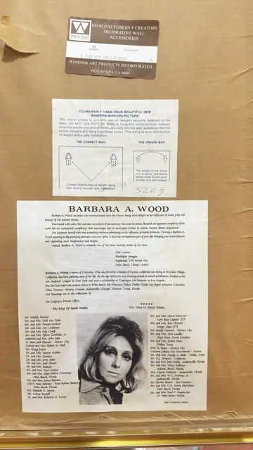

Paintings & Prints
Barbara A. Wood Signed Print, Woman With Roses, Numbered Edition, Framed
BARBARA A. WOOD · late 20th century
Price Upon Request





About the Item
BARBARA A. WOOD. A softly brushed figure study: a woman with an upswept blue and green coiffure bows her head, her cheek flushed coral, towards a cluster of deep magenta and teal roses at lower right. The forms are built from loose, sweeping strokes of violet, plum, cornflower blue and sea green, with the pale oval of her face and a sliver of white blouse as the lightest notes. The whole is set in wide double cream mats with a thin gold fillet inside a pale lacquered frame. Medium: offset lithograph on paper, pencil signed and numbered. Signed lower right margin, in pencil, reading "barbara A. wood". Edition: 871/975 (first digit indistinct; denominator 975). Inscribed on the reverse or mount: barbara A. wood (pencil signature, lower right margin); pencil edition number at lower left margin reading approximately '871/975' (the first digit is indistinct and could be a 4); WINDSOR ART , MANUFACTURERS • CREATORS DECORATIVE WALL ACCESSORIES / ITEM NUMBER: C 1158 695 DESCRIPTION: WILD FLOWER / WINDSOR ART PRODUCTS INCORPORATED / PICO RIVERA, CA 90660 , label on the backing board; TO PROPERLY HANG YOUR BEAUTIFUL NEW 'WINDSOR MIRRORS/PICTURE' ... THE CORRECT WAY / THE UNSAFE WAY , printed hanging instruction sheet on the backing board, with '5269' written on it in ink. Condition: No visible damage; sheet and mats clean. Backing paper is intact with its original labels. Lamp reflections on the glass.
Details
- Creator:
- BARBARA A. WOOD
- Creation Year:
- late 20th century
- Dimensions:
- Height: 26.5 in (67.31 cm)
Width: 20.0 in (50.8 cm)
outside of frame - Medium:
- offset lithograph on paper, pencil signed and numbered
- Edition:
- 871/975 (first digit indistinct; denominator 975)
- Period:
- 20Th
- Condition:
- Offered in the condition shown in the photographs.
- Reference Number:
- VO-224
- Documentation:
- no certificate; a printed artist biography sheet and a Windsor Art Products label are attached to the backing board
- Gallery Location:
- Mal Camino, Multiple Images, Esplanade, 150 Worth Ave., Palm Beach, Florida 33480